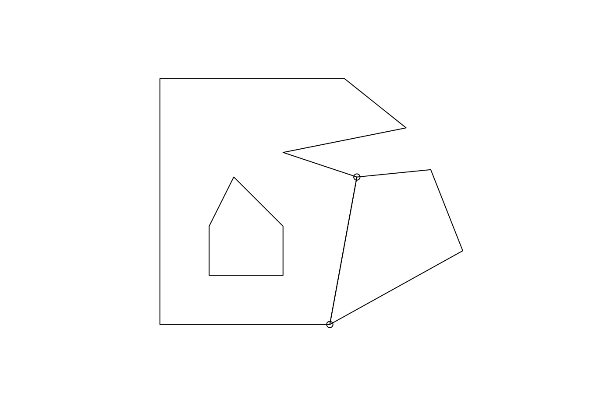

The silicate package is a response to a fragmented landscape where many workarounds and re-implementations of similar patterns are often repeated.
At the highest level silicate provides a normalized form of a complicated structure containing paths. This data structure contains three paths, each of which is a sequentially joined set of coordinates.
The key aspect here is that each component entity is formally named, with a unique ID that we persist for subsequent usage. This persistence is required as it records relationships between existing entitites implicitly rather than baking data into structure that are both explicit and also discard a lot of information about relationships.
library(silicate)
x <- PATH(minimal_mesh)
names(x)## [1] "object" "path" "path_link_vertex"
## [4] "vertex"At a basic level, the tables in this PATH are essentially the same as the kinds of structures we normally use, but we need to de-normalize them to see this exactly.
library(dplyr)##
## Attaching package: 'dplyr'## The following objects are masked from 'package:stats':
##
## filter, lag## The following objects are masked from 'package:base':
##
## intersect, setdiff, setequal, unionpurrr::reduce(x[c("object", "path", "path_link_vertex", "vertex")], dplyr::inner_join) %>%
dplyr::select(object,subobject, path_, x_, y_)## Joining, by = "object_"## Joining, by = "path_"## Joining, by = "vertex_"## # A tibble: 19 x 5
## object subobject path_ x_ y_
## <int> <int> <chr> <dbl> <dbl>
## 1 1 1 d92f20d6 0 0
## 2 1 1 d92f20d6 0 1.00
## 3 1 1 d92f20d6 0.750 1.00
## 4 1 1 d92f20d6 1.00 0.800
## 5 1 1 d92f20d6 0.500 0.700
## 6 1 1 d92f20d6 0.800 0.600
## 7 1 1 d92f20d6 0.690 0
## 8 1 1 d92f20d6 0 0
## 9 1 1 b64ced0c 0.200 0.200
## 10 1 1 b64ced0c 0.500 0.200
## 11 1 1 b64ced0c 0.500 0.400
## 12 1 1 b64ced0c 0.300 0.600
## 13 1 1 b64ced0c 0.200 0.400
## 14 1 1 b64ced0c 0.200 0.200
## 15 2 1 46e0e494 0.690 0
## 16 2 1 46e0e494 0.800 0.600
## 17 2 1 46e0e494 1.10 0.630
## 18 2 1 46e0e494 1.23 0.300
## 19 2 1 46e0e494 0.690 0Paths are easily re-expressed as a set of edges, treating each pair of coordinates as a new kind of entity. Some edges are shared, in that two objects might have a particular edge in their own path. If the shared neighbours are two polygons, then it’s likely that each polygon encounters that edge in a different direction, but this is not a stable pattern so it’s best to not assume it to be the case. It’s important here because we need to differentiate between an instance of an edge, which is a particular line segment that is part of one particular polygon. If that polygon segment is a shared edge with a neighbour polygon, then we distinguish the instances as a particular segment of a unique edge. This allows us the opportunity to treat the edge as completely abstract, and also to decide or record what it’s orientation is, which records which vertex is the first one, and which is the second. Not all applications need to care about this distinction, though.
In this way we have an analogy for edges and segments compared to vertices and coordinates, and I think this terminology makes sense but I’m open to discussion(!).
Some temporary internal functions (with “_base" appended) here are used to find the unique edges, and then identify what vertices are nodes when treating a structure as a connected mesh. Nodes are any coordinate where three or more edges meet each other, so they are inherently about relationships between neighbouring shapes. This is exactly the same model as was used in the olden days, called arc-node topology, a one-dimensional topology that pre-dates the more modern use of closed planar paths to describe polygons.
library(dplyr)
unique_edges <- dplyr::distinct(silicate:::sc_segment_base(x$path_link_vertex), edge_, .keep_all = TRUE)
vertex <- x$vertex
nodes <- silicate:::sc_node_base(unique_edges, vertex)
library(sf); plot(minimal_mesh$geom)## Linking to GEOS 3.6.2, GDAL 2.2.3, proj.4 4.9.3inner_join(nodes, x$vertex) %>% dplyr::select(x_, y_) %>% points()## Joining, by = "vertex_" There’s only one more entity we need, and this is the actual component paths that describe these structures topologically. These are paths that occur between any two nodes, or that have no nodes at all. This will occur for any isolated “island”, or for any hole within a polygon. These arcs are exactly analogous to a LINESTRING, but are used within a context where the nodes are important information about the topology.
Currently we haven’t yet normalized the arcs …
or made this work yet …
arcs <- silicate:::sc_arc_base(x$path_link_vertex, nodes)
distinct(arcs, arc)
sarcs <- split(arcs, arcs$arc_)
for (i in seq_along(sarcs)) {
plot(sf::st_cast(minimal_mesh, "MULTILINESTRING"), col = "black")
lines(sarcs[[i]] %>% inner_join(x$vertex) %>% select(x_, y_), col = "firebrick", lwd = 2)
}We haven’t yet done any coordinate precision checking, so there will be mis-identified arcs where coordinates are intended to be but are not exactly the same. (spdep glosses over this in a way we can’t control)
library(dplyr)
library(sf)
col1 <- polymesh
#example(st_read)
x <- PATH(polymesh)
unique_edges <- dplyr::distinct(silicate:::sc_segment_base(x$path_link_vertex), edge, .keep_all = TRUE)
vertex <- x$vertex
nodes <- silicate:::sc_node_base(unique_edges, vertex)
arcs <- silicate:::sc_arc_base(x$path_link_vertex, nodes)
distinct(arcs, arc)
sarcs <- split(arcs, arcs$arc_)
sf_arcs <- st_sf(arc = seq_along(sarcs), st_sfc(lapply(sarcs, function(a) {
st_linestring(inner_join(a, x$vertex, "vertex_") %>% dplyr::select(x_, y_) %>% as.matrix())
})))
plot(sf_arcs)
# for (i in seq_along(sarcs)) {
# plot(sf::st_cast(st_geometry(col1), "MULTILINESTRING"), col = "black")
# lines(sarcs[[i]] %>% inner_join(x$vertex) %>% dplyr::select(x_, y_), col = "firebrick", lwd = 2)
# }